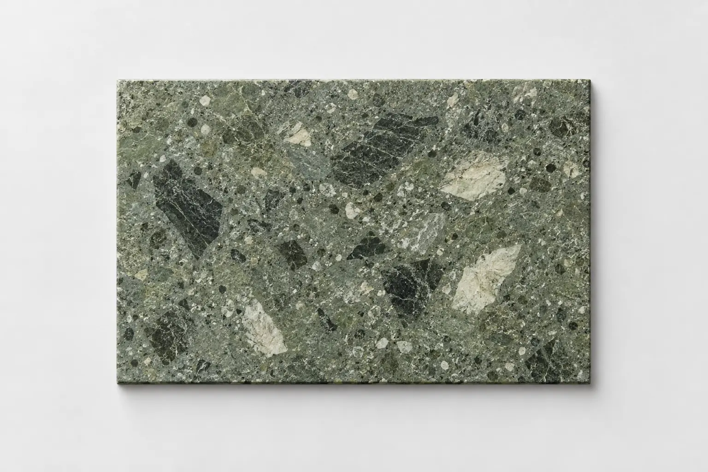

160 - Brand Guidelines by Source · pp. 1, 2, 3, 4, 9, 17, 25, 32
Layout study · Original theme imagery · Illustrative copy and data
A direction. A clear point of view.

One clear idea, supported by a deliberate visual hierarchy.
Keep the observation and its supporting evidence together.